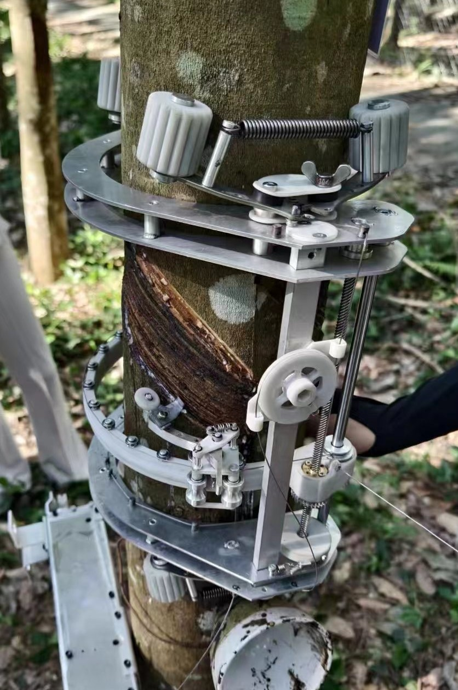
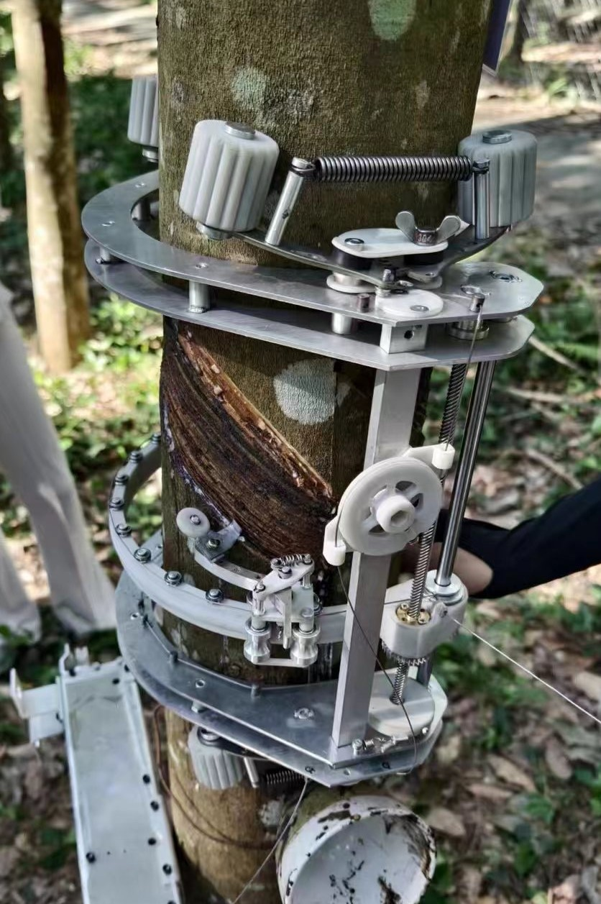

Overview
Rub-X is a lightweight, modular tapping solution powered by a cable-driven system, programmable controllers, and flexible energy sources. Designed for difficult terrain, it brings automation to rubber plantations at a fraction of the cost.
Key Features
- 🎯 Programmable, precise tapping on each tree
- 🪢 Reliable cable-based distribution for power & control
- 🔋 Power options: battery, AC, or solar energy
- 🧰 Low maintenance, easy to install and scale
- 🌳 Compatible with traditional plantation layouts
Product Gallery

 

Demonstration Video
Technical Specifications
| Component | Specification |
|---|---|
| System Type | Cable-driven automation for tapping |
| Control Unit | Programmable for timing and pattern |
| Power Options | 12V Battery, 220V AC, Solar |
| Material | Durable polymer and stainless steel |